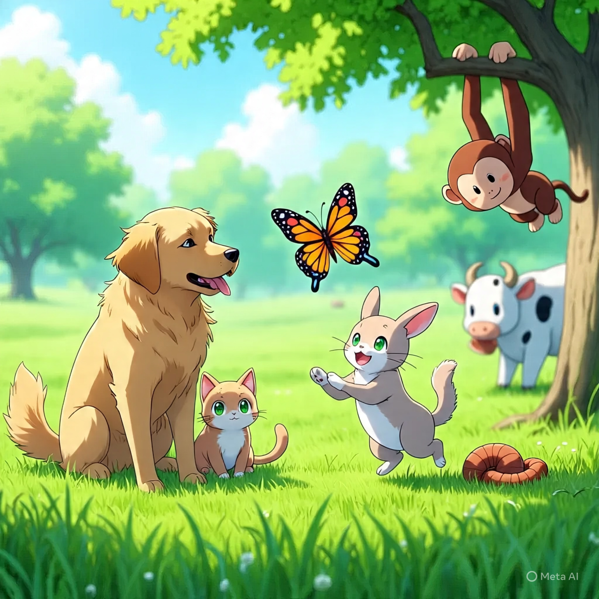

¡Descubre los Animales en Señas!
2
Aprende cómo se comunican los nombres de los animales en LSC de forma divertida y visual.
Instrucciones:
-
Observa los videos con las señas de cada animal.
-
Practica repitiendo los movimientos y configuraciones manuales.
-
Juega con las actividades interactivas para reforzar tu aprendizaje.
Pulsa sobre las áreas o iconos activos de la imagen.
{"typeGame":"Mapa","instructions":"","showMinimize":false,"showActiveAreas":false,"author":"","url":"/previews/C__Users_Casa_Desktop_REURSOS_OVA_ANIMALES_perro_gato_conejo_mariposa_mico_vaca_gusano.jpeg","authorImage":"","altImage":"","itinerary":{"showClue":false,"clueGame":"","percentageClue":40,"showCodeAccess":false,"codeAccess":"","messageCodeAccess":""},"points":[{"id":"p612512283201","title":"Animales","type":0,"url":"/previews/C__Users_Casa_Desktop_REURSOS_OVA_ANIMALES_gif_animales.gif","video":"","x":0.4660345873786408,"y":0.18285800970873786,"x1":0,"y1":0,"footer":"","author":"","alt":"","iVideo":0,"fVideo":0,"eText":"","iconType":0,"question":"","question_audio":"","toolTip":"","link":"","color":"#000000","fontSize":"14","map":{"id":"a612512283201","pts":[{"id":"p425268101712","title":"","type":0,"url":"","video":"","x":0,"y":0,"x1":0,"y1":0,"footer":"","author":"","alt":"","iVideo":0,"fVideo":0,"eText":"","iconType":0,"question":"","question_audio":"","toolTip":"","link":"","color":"#000000","fontSize":"14","map":{"id":"a425268101712","url":"","alt":"","author":"","pts":[]},"slides":[{"id":"s425268101712","title":"","url":"","author":"","alt":"","footer":""}],"activeSlide":0}],"url":"","alt":"","author":"","active":0},"slides":[{"id":"s612512283201","title":"","url":"","author":"","alt":"","footer":""}],"activeSlide":0,"audio":""},{"id":"p578526908194","title":"Perro","type":0,"url":"/previews/C__Users_Casa_Desktop_REURSOS_OVA_ANIMALES_gif_perro.gif","video":"","x":0.24273361650485437,"y":0.5207220873786408,"x1":0,"y1":0,"footer":"","author":"","alt":"","iVideo":0,"fVideo":0,"eText":"","iconType":0,"question":"","question_audio":"","toolTip":"","link":"","color":"#000000","fontSize":"14","map":{"id":"a578526908194","pts":[{"id":"p1336803137334","title":"","type":0,"url":"","video":"","x":0,"y":0,"x1":0,"y1":0,"footer":"","author":"","alt":"","iVideo":0,"fVideo":0,"eText":"","iconType":0,"question":"","question_audio":"","toolTip":"","link":"","color":"#000000","fontSize":"14","map":{"id":"a1336803137334","url":"","alt":"","author":"","pts":[]},"slides":[{"id":"s1336803137334","title":"","url":"","author":"","alt":"","footer":""}],"activeSlide":0}],"url":"","alt":"","author":"","active":0},"slides":[{"id":"s578526908194","title":"","url":"","author":"","alt":"","footer":""}],"activeSlide":0,"audio":""},{"id":"p1453239256600","title":"Mariposa","type":0,"url":"/previews/C__Users_Casa_Desktop_REURSOS_OVA_ANIMALES_gif_mariposa.gif","video":"","x":0.5262287621359223,"y":0.45276092233009707,"x1":0,"y1":0,"footer":"","author":"","alt":"","iVideo":0,"fVideo":0,"eText":"","iconType":0,"question":"","question_audio":"","toolTip":"","link":"","color":"#000000","fontSize":"14","map":{"id":"a1453239256600","pts":[{"id":"p677626791108","title":"","type":0,"url":"","video":"","x":0,"y":0,"x1":0,"y1":0,"footer":"","author":"","alt":"","iVideo":0,"fVideo":0,"eText":"","iconType":0,"question":"","question_audio":"","toolTip":"","link":"","color":"#000000","fontSize":"14","map":{"id":"a677626791108","url":"","alt":"","author":"","pts":[]},"slides":[{"id":"s677626791108","title":"","url":"","author":"","alt":"","footer":""}],"activeSlide":0}],"url":"","alt":"","author":"","active":0},"slides":[{"id":"s1453239256600","title":"","url":"","author":"","alt":"","footer":""}],"activeSlide":0,"audio":""},{"id":"p437253004812","title":"Gusano","type":0,"url":"/previews/C__Users_Casa_Desktop_REURSOS_OVA_ANIMALES_gif_gusano.gif","video":"","x":0.8699180825242718,"y":0.8003337378640777,"x1":0,"y1":0,"footer":"","author":"","alt":"","iVideo":0,"fVideo":0,"eText":"","iconType":0,"question":"","question_audio":"","toolTip":"","link":"","color":"#000000","fontSize":"14","map":{"id":"a437253004812","pts":[{"id":"p1286861099178","title":"","type":0,"url":"","video":"","x":0,"y":0,"x1":0,"y1":0,"footer":"","author":"","alt":"","iVideo":0,"fVideo":0,"eText":"","iconType":0,"question":"","question_audio":"","toolTip":"","link":"","color":"#000000","fontSize":"14","map":{"id":"a1286861099178","url":"","alt":"","author":"","pts":[]},"slides":[{"id":"s1286861099178","title":"","url":"","author":"","alt":"","footer":""}],"activeSlide":0}],"url":"","alt":"","author":"","active":0},"slides":[{"id":"s437253004812","title":"","url":"","author":"","alt":"","footer":""}],"activeSlide":0,"audio":""},{"id":"p242708951002","title":"Mico","type":0,"url":"/previews/C__Users_Casa_Desktop_REURSOS_OVA_ANIMALES_gif_mico.gif","video":"","x":0.9145782766990291,"y":0.3381978155339806,"x1":0,"y1":0,"footer":"","author":"","alt":"","iVideo":0,"fVideo":0,"eText":"","iconType":0,"question":"","question_audio":"","toolTip":"","link":"","color":"#000000","fontSize":"14","map":{"id":"a242708951002","pts":[{"id":"p164644670364","title":"","type":0,"url":"","video":"","x":0,"y":0,"x1":0,"y1":0,"footer":"","author":"","alt":"","iVideo":0,"fVideo":0,"eText":"","iconType":0,"question":"","question_audio":"","toolTip":"","link":"","color":"#000000","fontSize":"14","map":{"id":"a164644670364","url":"","alt":"","author":"","pts":[]},"slides":[{"id":"s164644670364","title":"","url":"","author":"","alt":"","footer":""}],"activeSlide":0}],"url":"","alt":"","author":"","active":0},"slides":[{"id":"s242708951002","title":"","url":"","author":"","alt":"","footer":""}],"activeSlide":0,"audio":""},{"id":"p469962314073","title":"Vaca","type":0,"url":"/previews/C__Users_Casa_Desktop_REURSOS_OVA_ANIMALES_gif_vaca.gif","video":"","x":0.8893355582524272,"y":0.6100424757281553,"x1":0,"y1":0,"footer":"","author":"","alt":"","iVideo":0,"fVideo":0,"eText":"","iconType":0,"question":"","question_audio":"","toolTip":"","link":"","color":"#000000","fontSize":"14","map":{"id":"a469962314073","pts":[{"id":"p1163275233333","title":"","type":0,"url":"","video":"","x":0,"y":0,"x1":0,"y1":0,"footer":"","author":"","alt":"","iVideo":0,"fVideo":0,"eText":"","iconType":0,"question":"","question_audio":"","toolTip":"","link":"","color":"#000000","fontSize":"14","map":{"id":"a1163275233333","url":"","alt":"","author":"","pts":[]},"slides":[{"id":"s1163275233333","title":"","url":"","author":"","alt":"","footer":""}],"activeSlide":0}],"url":"","alt":"","author":"","active":0},"slides":[{"id":"s469962314073","title":"","url":"","author":"","alt":"","footer":""}],"activeSlide":0,"audio":""}],"isScorm":0,"textButtonScorm":"Guardar la puntuación","repeatActivity":false,"textAfter":"","evaluation":0,"selectsGame":[{"typeSelect":0,"numberOptions":4,"quextion":"","options":["","","",""],"solution":"","solutionWord":"","percentageShow":35,"msgError":"","msgHit":""}],"isNavigable":true,"showSolution":true,"timeShowSolution":3,"version":2,"percentajeIdentify":100,"percentajeShowQ":100,"percentajeQuestions":100,"autoShow":false,"autoAudio":true,"optionsNumber":0,"evaluationF":false,"evaluationIDF":"","id":"202571316344300","order":"","msgs":{"msgSubmit":"Enviar","msgIndicateWord":"Proporcione una palabra o expresión","msgClue":"¡Genial! La pista es:","msgErrors":"Errores","msgHits":"Aciertos","msgScore":"Puntuación","msgMinimize":"Minimizar","msgMaximize":"Maximizar","msgFullScreen":"Pantalla Completa","msgNoImage":"Pregunta sin imágenes","msgSuccesses":"¡Correcto! | ¡Excelente! | ¡Genial! | ¡Muy bien! | ¡Perfecto!","msgFailures":"¡No era eso! | ¡Incorrecto! | ¡No es correcto! | ¡Lo sentimos! | ¡Error!","msgTryAgain":"Necesita al menos un %s% de respuestas correctas para conseguir la información. Vuelva a intentarlo.","msgEndGameScore":"Antes de guardar la puntuación comience la partida.","msgScoreScorm":"La puntuación no se puede guardar porque esta página no forma parte de un paquete SCORM.","msgPoint":"Punto","msgAnswer":"Responder","msgOnlySaveScore":"¡Sólo puede guardar la puntuación una vez!","msgOnlySave":"Sólo puede guardar una vez","msgInformation":"Información","msgYouScore":"Su puntuación","msgOnlySaveAuto":"Su puntuación se guardará después de cada pregunta. Sólo puede jugar una vez.","msgSaveAuto":"Su puntuación se guardará automáticamente después de cada pregunta.","msgSeveralScore":"Puede guardar la puntuación tantas veces como quiera","msgYouLastScore":"La última puntuación guardada es","msgActityComply":"Ya ha realizado esta actividad.","msgPlaySeveralTimes":"Puede realizar esta actividad cuantas veces quiera","msgClose":"Cerrar","msgPoints":"puntos","msgPointsA":"Puntos","msgQuestions":"Preguntas","msgAudio":"Audio","msgAccept":"Aceptar","msgYes":"Sí","msgNo":"No","msgShowAreas":"Mostrar áreas activas","msgShowTest":"Mostrar cuestionario","msgGoActivity":"Pulsa aquí para realizar esta actividad","msgSelectAnswers":"Selecciona las opciones correctas y pulsa sobre el botón 'Responder'.","msgCheksOptions":"Marca todas las opciones en el orden adecuado y pulsa sobre el botón 'Responder'.","msgWriteAnswer":"Escribe la palabra o expresión correcta y pulsa en el botón 'Responder'.","msgIdentify":"Identifica","msgSearch":"Buscar","msgClickOn":"Pulsa sobre","msgReviewContents":"Debes repasar el %s% de los contenidos de la actividad antes de completar el cuestionario.","msgScore10":"¡Todo perfecto! ¡Enhorabuena! ¿Deseas repetir esta actividad?","msgScore4":"No has superado esta prueba. Repasa sus contenidos e inténtalo de nuevo. ¿Deseas repetir la actividad?","msgScore6":"¡Estupendo! Has superado la prueba, pero seguro que lo puedes mejorar. ¿Deseas repetir esta actividad?","msgScore8":"¡Casi perfecto! Aún lo puedes hacer mejor. ¿Deseas repetir esta actividad?","msgNotCorrect":"¡No es correcto! Has pulsado sobre","msgNotCorrect1":"¡No es correcto! Has pulsado sobre","msgNotCorrect2":"y la respuesta correcta es","msgNotCorrect3":"¡Prueba otra vez!","msgAllVisited":"¡Genial! Has visitado los puntos necesarios.","msgCompleteTest":"Puedes completar el cuestionario.","msgPlayStart":"Pulse aquí para empezar","msgSubtitles":"Subtítulos","msgSelectSubtitles":"Selecciona un archivo de subtítulos. Formatos válidos:","msgNumQuestions":"Número de preguntas","msgHome":"Inicio","msgReturn":"Volver","msgCheck":"Comprobar","msgUncompletedActivity":"Actividad no completada","msgSuccessfulActivity":"Actividad superada. Puntuación: %s","msgUnsuccessfulActivity":"Actividad no superada. Puntuación: %s","msgTypeGame":"Mapa"}}



Su navegador no es compatible con esta herramienta.